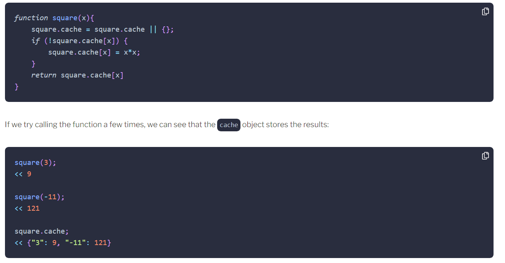
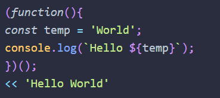

If a function takes some time to compute a return value, we can save the result in a cache property.
One of the core tenets of functional programming: it allows generic higher-order functions to be used to return more specific functions based on particular parameters.
It is possible to make a temporary function like this
Immediately Invoked Function Expression – or IIFE – (pronounced 'iffy') is an anonymous function that, as the name suggests, is invoked as soon as it’s defined.
Generators are special functions used to produce iterators that maintain the state of a value.
function* declaration ( function keyword followed by an asterisk) defines a generator function, which returns a Generator object.
Yieldthe keyword is used to return a value. The difference between the yield and the return keywords is that by using yield, the state of the value returned is remembered the next time
Functional programming uses pure functions as the building blocks of a program. The functions perform a series of operations without changing the state of any data. Each function forms an abstraction that should perform a single task, while encapsulating the details of its implementation inside the body of the function. This means that a program becomes a sequence of expressions based on the return values of pure functions. The emphasis is placed on using function composition to combine pure functions together to complete more complex tasks.
Higher Order Functions: accept another function as an argument, or return another function as a result, or both.
Currying Named after Haskell Curry and it is when a function only partially applies its functions and some are left to be resolved by other data. A final result is only returned once all the expected arguments have eventually been provided.
Ajax is a technique that allows web pages to communicate asynchronously with a server, and it dynamically updates web pages without reloading.
The same-origin policy in browsers blocks all requests from a domain that is different from the page making the request
Cross-origin resource sharing (CORS) is a solution to this problem as it allows resources to be requested from another website outside the original domain.
Asynchronous loading techniques: started to be noticed when Google launched Gmail and Google Maps in 2004 and 2005 respectively. These web applications used asynchronous loading techniques to enhance the user experience by changing the parts of the page without a full refresh. This gave them a much snappier and responsive quality that felt more like a desktop application.
CORS cross-origin resource sharing. It is a solution to this problem as it allows resources to be requested from another website outside the original domain.
The redirect() method can be used to redirect to another URL. It creates a new promise that resolves to the response from the redirected URL.At the present time, there is no support for the redirect() method in any browser.
The blob() method> is used to read a file of raw data, such as an image or a spreadsheet.
JSON is probably the most common format for AJAX responses
GET requests to retrieve resources from the web. By default, a link in a web page will make a GET request. Forms are also submitted using a GET request by default, but they will often use a POST request.
POST requests, usually used to create a resource but can actually perform any task from the web
PUT requests to upsert, which means insert a resource or update it entirely
PATCH requests to make partial updates to a resource
DELETE requests to delete a resources.